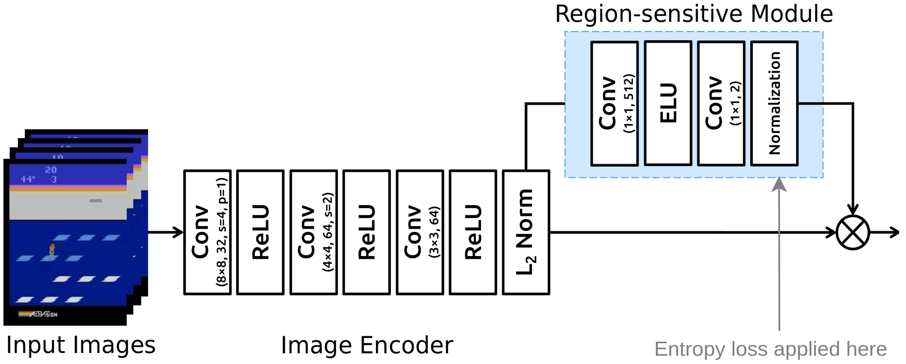

Scatter plot of score at 10M steps, attention loss
Dmitry Nikulin, Sebastian Kosch, Fabian Steuer, Hoagy Cunningham
This project was completed during AI Safety Camp 3 in Ávila, Spain, in May 2019. The goal was to familiarize ourselves with the state of the art in visualizing machine learning models, particularly in an reinforcement learning context, and to test possible improvements.
Advances in deep learning are enabling reinforcement learning (RL) agents to accomplish increasingly difficult tasks. For instance, relatively simple machine learning agents can learn how to beat humans in video games, without ever having been programmed how to do so. However, agents sometimes learn to make correct decisions for the wrong reasons, which can lead to surprising and perplexing failures later. In order to diagnose such problems effectively, the developer needs to understand how information flows through the artificial neural network that powers the agent’s decision-making process.
To date, most of the research on this topic has focused on image classification tasks instead of RL. As a result, most proposed methods output a heatmap highlighting those pixels of the input image that are most responsible for the inferred label. For instance, given a photograph of a dog in a meadow that was correctly classfied as “dog”, a visualization of those pixels the network considers most dog-like provides a check on whether the network has truly learned the concept of dogs, or whether it merely made a lucky guess based on the presence of the meadow.
To some extent, such methods can be repurposed for the analysis of RL agents playing video games, since the RL infers actions (labels) from images (render frames). However, the resulting heatmaps are often blurry or noisy. Furthermore, image classifiers simply detect objects, while RL agents must choose actions based on complex relationships between entities detected in the input. A simple heatmap visualization cannot convey whether and where such relationships were detected.
In this paper, we present two potential improvements to existing visualization approaches in RL, and report on our experimental findings regarding their performance on the Atari Breakout game.
In 2016, Zhao et al. explored the effects of adding two attention layers to the decision-making network of an agent learning to play Breakout and other games. The attention layers, applied after some convolutional layers which detect basic game entities, restrict the input to the agent’s action selection mechanism to a subset of the input pixels (the attention mask). In effect, the agent’s model is forced to focus spatially. Adding such a bottleneck can improve training times, but more importantly, the attention layer activations provide a direct clue about what the model is focusing on. This directness is attractive when compared to post-hoc methods, which require additional computation to reason about the relevance of network activations after inference.

Note that there is no direct correspondence between activated attention layer neurons and relevant input pixels. This is due to the convolutional downsampling layers that separate the input image from the attention layers. However, we can generate a heatmap by backpropagating the attention tensor through the network. Several different approaches exist to accomplish this, from Simonyan et al.’s gradient method to the more recent VarGrad and SmoothGrad sampling methods.
Zhao et al. used the former, a basic gradient method, to visualize the attention mask corresponding to their agent’s attention layer activations. Their findings confirm that in trained agents, the attention tends to be strong near crucial entities in the game, i.e. the Pacman sprite or the moving ball in Breakout. However, the attention mask heatmaps are noisy and not very informative.
The effectiveness of attention layers depends crucially on how the attention is constrained. This is especially true because of the downsampling action of the convolutional layers in Zhao et al.’s architecture: a diffuse attention tensor will effectively correspond to all input pixels, defeating the purpose of the attention layer.
To incentivize more informative heatmaps than those obtained by Zhao et al., we added an extra loss term to represent the diffuseness of the attention tensor. Several such measures exist; we settled on using the entropy of the final attention layer.
[explanation of the math]
Although attention mechanisms have been shown to improve training times, excessively strong regularization will naturally prevent the agent from taking into account complex relationships between spatially distant entities, and thus degrade performance. We ran a suite of experiments to quantify the impact of entropy regularization on the agent’s performance at playing Breakout.
We recreated the agent by Zhao et al. in TensorFlow using the stable-baselines package, a fork of OpenAI’s baselines package with improved code style and documentation. Since stable-baselines does not include all features of the Rainbow training architecture, we used PPO as a state-of-the-art algorithm available in the library.
Our initial experiments found that adding the attention layers to the baseline architecture made no noticeable change in its performance.
Scatter plot of score at 10M steps, attention loss
The degradation of performance as a result of adding the entropy loss term was surprisingly sudden: using a barely noticeable regularization coefficient of 0.001, performance was not affected. At 0.005, the regularization was fully appreciable (see videos below), with barely an impact on performance. With coefficients of 0.01 and higher, however, the model was completely unable to learn in almost all runs.
Heatmaps are an excellent tool to visualize the relevance of individual pixels to the agent’s decision. But asking about the relevance of individual pixels rarely results in satisfying explanations.
Simonyan Gradient (Left), Smoothgrad (Right) and Vargrad (Bottom) of the attention layer without entropy penalty.
Visualizations of the filters learned by the convolutional layers of the network suggest that lower layers detect the presence (or absence) of particular game entities, such as a paddle or a ball, while higher layers encode spatial relationships between those entities. Therefore, the presence of certain spatial relationships between game entities informs the decision-making.
We propose that two-dimensional heatmaps can be replaced with interactive, three-dimensional visualizations that present such spatial relationships in a manner analogous to Bach et al.’s layer-wise relevance propagation (LRP) approach. Beginning with the attention layer, we select the n strongest activations, and then recursively find the n strongest contribution activations in the layers below. This results in a tree structure, a visualization of which can show not only where the presence (or absence) of specific game entities is most relevant, but also which spatial relationships between them most contributed to the selected action.
In practice, it can be challenging to select the most important elements in each layer based on their activations, since neighbouring neurons in convolutional layers share very similar inputs, and we are interested in prominent peaks, not absolute peaks, in activation strength. Our initial choice of k-means clustering to accomplish this proved too slow for interactive visualizations, so we switched to a peak detection algorithm to find neurons of interest. The final tree is plotted on top of the stack of input frames.
Zhao Yang et al. Learn to Interpret Atari Agents↩︎
Simonyan et al. Deep Inside Convolutional Networks: Visualising Image Classification Models and Saliency Maps↩︎